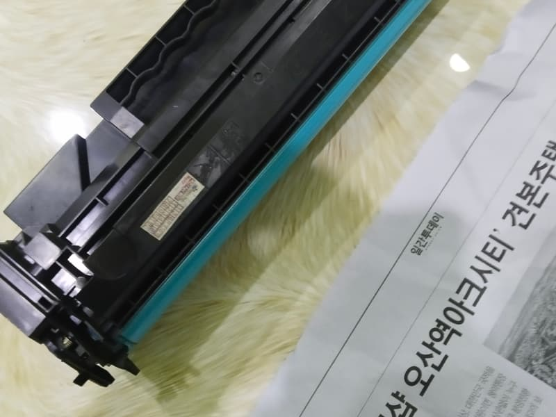

Máy in báo lỗi drum: không phải lúc nào cũng cần thay trống
Trống (drum) là linh kiện đưa mực lên giấy. Ba thông báo Drum Error, Replace Drum và Drum Stop có ý nghĩa khác nhau, và có trường hợp xử lý được trong một phút.
Máy của anh/chị đang báo gì?
Hệ thống 9 địa chỉ: Quận 8, Quận 10, Quận 11, Phú Nhuận, Bình Thạnh, Bình Chánh, Thủ Đức, Bình Dương.
Tìm hình giống tờ giấy của anh/chị, mũi tên đỏ chỉ đúng chỗ lỗi. Hình là minh hoạ, bấm vào hình để xem nguyên nhân.
- Drum End Soon. Nguyên nhân: Trống sắp tới hạn theo số trang đã đếm. Nên làm: Cứ in tiếp, chuẩn bị thay.
- Drum Error. Nguyên nhân: Dây sạc trong cụm trống bị bẩn. Nên làm: Tự gạt thanh trượt màu xanh.
- Replace Drum, bản in còn đẹp. Nguyên nhân: Máy đếm đủ số trang, trống có thể vẫn dùng được. Nên làm: Theo dõi bản in, chuẩn bị thay.
- Replace Drum, bản in sọc, xám nền. Nguyên nhân: Trống đã mòn thật. Nên làm: Cần thay trống.
- Drum Stop. Nguyên nhân: Trống đã quá hạn, máy dừng in. Nên làm: Cần thay trống.
Xử lý Drum Error trong một phút (máy Brother)
- Tắt máy, mở nắp trước, lấy cụm trống và hộp mực ra.
- Tìm thanh trượt nhỏ màu xanh trên cụm trống.
- Gạt thanh qua lại khoảng 10 lần từ đầu này sang đầu kia.
- Đưa thanh về đúng vị trí ban đầu có mũi tên. Để sai vị trí thì bản in sẽ có sọc dọc.
- Lắp lại, bật máy và in thử.
Cách biết trống đã thật sự mòn
- Nền trang xám dù hộp mực còn tốt.
- Có vệt đen dọc lặp đúng chu kỳ, hoặc sọc ở cùng một vị trí trên mọi trang.
- Bản in xấu đi ngay cả khi vừa nạp mực hoặc đổi hộp mới.


Trước khi thay trống cần biết
- Với máy Brother, hộp mực và trống là hai cụm rời nhau, nên nạp mực không xử lý được lỗi drum.
- Sau khi thay trống, cần đặt lại bộ đếm trống theo đúng hướng dẫn của model, nếu không máy vẫn báo.
- Với nhiều máy HP và Canon, trống nằm liền trong hộp mực, nên lỗi trống được xử lý cùng với hộp.
Thử rồi vẫn chưa được?
Gọi hoặc gửi ảnh bản in qua Zalo, cửa hàng sẽ nói anh/chị biết nên làm gì tiếp theo và báo giá trước. Văn phòng, cửa hàng ở nội thành TP.HCM có nhiều máy thì nhắn danh sách dòng máy để cửa hàng sắp xếp một lượt. Có xuất hoá đơn VAT, bảo hành tính theo số trang in.
Gọi 0986 704 260 Gửi ảnh qua Zalo
Giá tham khảo
| Hạng mục | Giá |
|---|---|
| Trống (drum) máy in A4 | 180.000 – 280.000đ |
| Hộp mực mới nguyên bộ | 320.000 – 850.000đ |
Giá chốt sau khi xem máy, anh/chị đồng ý thì mới làm.
Hệ thống 9 địa chỉ, chọn nơi gần anh/chị
- Quận 8 5/19 Phạm Hùng, Bình Hưng
- Quận 10 77 Cửu Long, Hòa Hưng
- Quận 10 79 Bắc Hải
- Quận 11 64 Bình Thới
- Phú Nhuận 240 Nguyễn Trọng Tuyển
- Bình Thạnh 1/2/26 Võ Oanh
- Bình Chánh 203 Thế Lữ, Tân Nhựt
- Thủ Đức 75 đường số 4, KDC Tam Bình
- Bình Dương 3 Lái Thiêu 1
Gọi hoặc nhắn Zalo 0986 704 260 cho mọi địa chỉ. Bấm vào địa chỉ để mở chỉ đường.
Câu hỏi thường gặp
Máy báo Replace Drum có in tiếp được không?
Nhiều máy vẫn in tiếp được một thời gian. Nếu bản in vẫn đẹp, anh/chị có thể dùng tiếp và chuẩn bị thay. Khi máy chuyển sang Drum Stop thì máy sẽ dừng in.
Trống dùng được bao lâu?
Tùy dòng máy và số trang in mỗi ngày nên không có một con số chung. Hãy xem chất lượng bản in thay vì chỉ nhìn vào thông báo của máy.